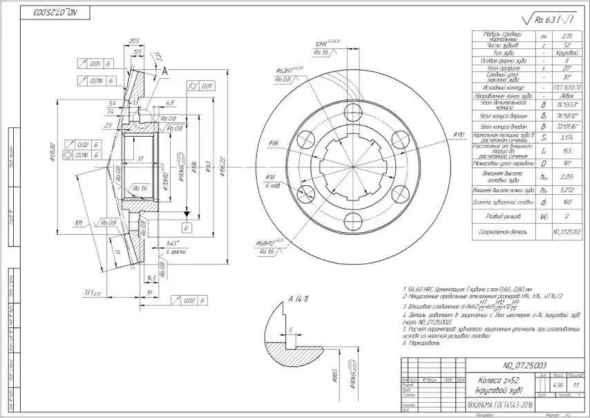

Резиновая футеровка мельниц. Твёрдость Шор А 50-75 обеспечивает отличное поглощение ударов и снижение шума.
Превосходная коррозионная и кавитационная стойкость; снижение шума на 50-70%...
Резиновые детали флотацных камер: рабочие колёса, статоры и диффузоры.
Превосходная коррозионная и кавитационная стойкость; снижение шума на 50-70%...
Резиновая футеровка и уплотнения шламовых насосов.
Превосходная коррозионная и кавитационная стойкость; снижение шума на 50-70%...
| Модели | Base | Hardness | Tensile | Abrasion |
|---|---|---|---|---|
| Natural Rubber / Polyurethane | NR/SBR or PU | Shore A 50-75 | ≥ 20 MPa | DIN ≤ 150 mm³ |
Превосходная коррозионная и кавитационная стойкость; снижение шума на 50-70%